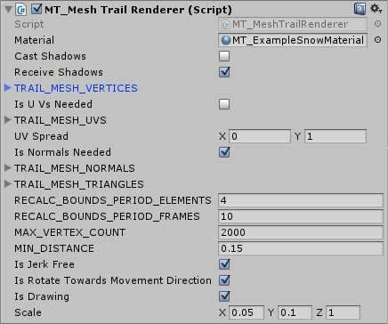
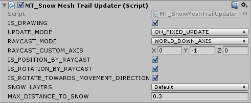

Documentation:
MT_MeshTrailRenderer
The MT_MeshTrailRenderer is the heart of this package. This script allows you to draw a 3d trail, which is independent of the camera position and angle (in contrast to the Unity built-in TrailRenderer).|  |
Material: material of the generated trail mesh.
Cast Shadows: cast shadows setting of the generated trail mesh. Receive Shadows: receive shadows setting of the generated trail mesh. TRAIL_MESH_VERTICES: this Vector3 array contains the vertices of the edge between trail mesh steps. Vertices are defined in local coordinates of the game object that has this script attached. Is UVs Needed: if true, then the TRAIL_MESH_UVS must be provided. If false, then the generated trail mesh will have no UV coordinates (use only with custom shaders that need no UV). TRAIL_MESH_UVS: this Vector2 array contains the UV coordinates for each vertex in TRAIL_MESH_VERTICES. This array must have the same length as the vertex array. UV Spread: this vector is applied to the UV coordinates of each trail edge. The applied vector is multiplied with the trail length at the edge. |
MT_SnowMeshTrailUpdater
Finally, the MT_SnowMeshTrailUpdater is the script that uses the MT_MeshTrailRenderer to draw a snow trail on the Unity Terrain. Additionally, this script will instantiate the material of the mesh trail renderer and change its render queue order to prevent crossing trails from z-fighting. All trails managed by MT_SnowMeshTrailUpdater scripts will have a defined rendering order. For example, the first created trail will always be behind the second created trail.|  |
IS_DRAWING: set this to false when you need to disable the trail. For example, if your player is in air and you know that there should be no trail, then you can hide the trail with "IsDrawing = false;".
UPDATE_MODE: depending on your code it might have a difference when to update the trails state. For example, if you use rigidbodies you should select the ON_FIXED_UPDATE mode to let the script work in the FixedUpdate function. This way the result will be more accurate. Then again if you move your objects only in the Update function and do not use rigidbodies then you need to let the calculations happen in the Update loop (ONCE_PER_FRAME mode). Also, ONCE_PER_FRAME is usually faster. Therefore, if you seek for optimization you can use this mode and sacrifice accuracy when used with rigidbodies (useful only on mobile, since the performance implications are very small). |
MT_SnowTrailShader & MT_SnowTrailShaderTextured
The MT_SnowTrailShader and the MT_SnowTrailShaderTextured will draw a trail visible only on Unity Terrain. The shaders draw with an offset, so that the actual trail can be drawn under the terrain's surface. Check the lines "Offset -1, -1" and "v.vertex.xyz += normalize(viewDir)*min(viewDirLength*0.75, 0.75);" for the offset values (just in case that you will need to put you trail further into the ground). Use MT_SnowTrailShader if you want to have a colored trail without texture and MT_SnowTrailShaderTextured if you want to add more details with a texture.MT_SnowTrailShaderGeometry & MT_SnowTrailShaderGeometryTextured
In contrast to the shaders above, the geometry shaders draw on everything (Unity Terrain and other objects). Use the "Z Buffer Offset" material property to put the trail deeper into the ground.Troubleshooting
ERROR: